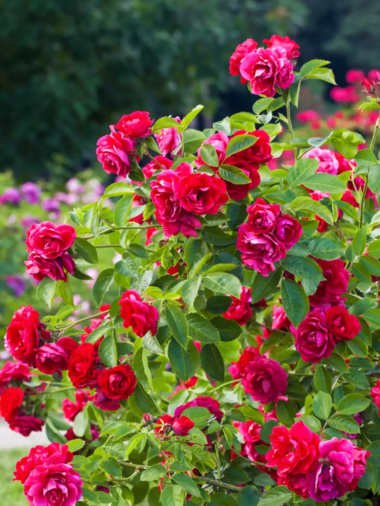
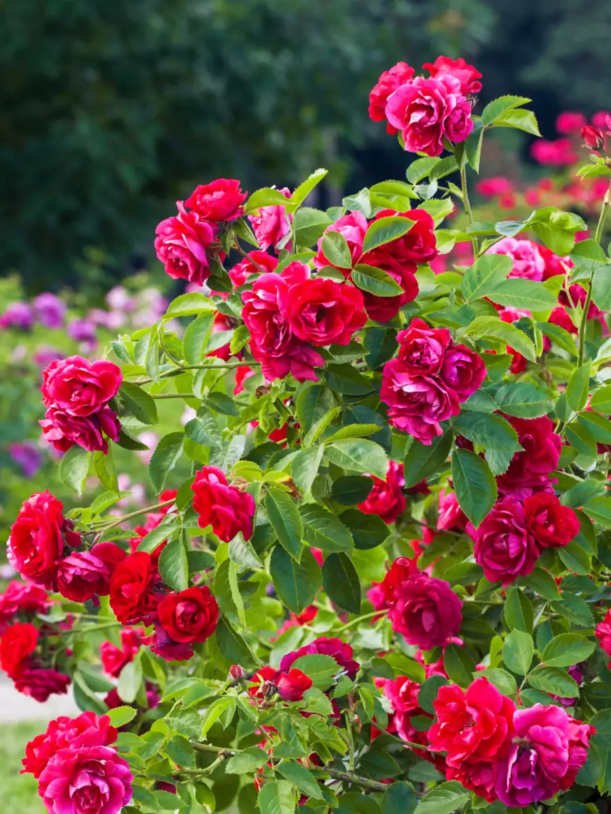
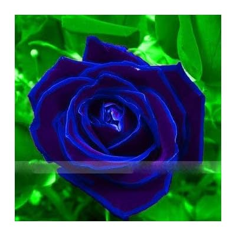
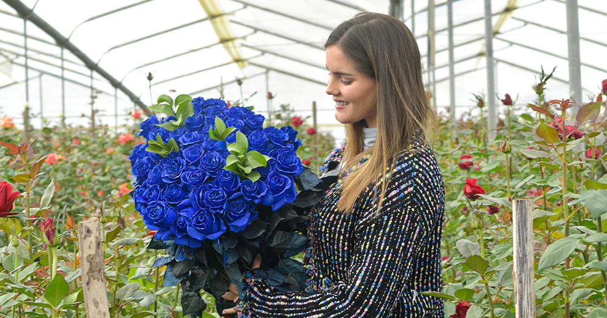
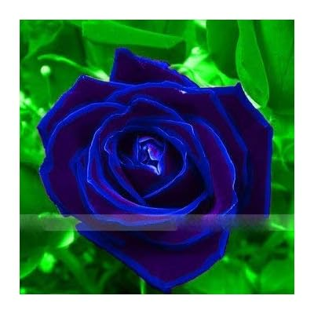
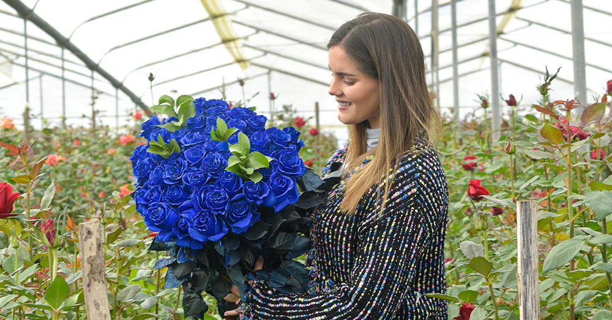

We had to begin this list with the rose. No other flower is as famous or popular. The rose outshines everything else. One of the biggest reasons for the rose's popularity is its association with love

 


Red Roses: Red roses symbolize all the qualities that speak to a powerful and genuinely beautiful love story. They represent devotion, passion, romance, desire, and true love. This makes them the best flower to share on Valentine's Day, weddings, anniversaries, and other romantic special events.
Yellow Rose:Yellow roses are universally known as symbols of friendship, most people give them to each other for their birthdays or to celebrate the love between two good friends. Roses symbolise everything from “I love you” to “I care for our friendship” and colours vary from romantic red to energetic orange.
 



White Rose:White roses symbolize purity, youthfulness, and innocence. Young love, eternal loyalty, and new beginnings are also commonly tied to the meaning of white roses, making them a popular choice for weddings and romantic occasions.

 >
>
Flowers Shop video and location are given below:
"
| Flowers Name | Colour | price(per pis) |
|---|---|---|
| Rose | Red | 10 |
| Marigold | Yellow | 3 |
| Lotus | Pink | 20 |